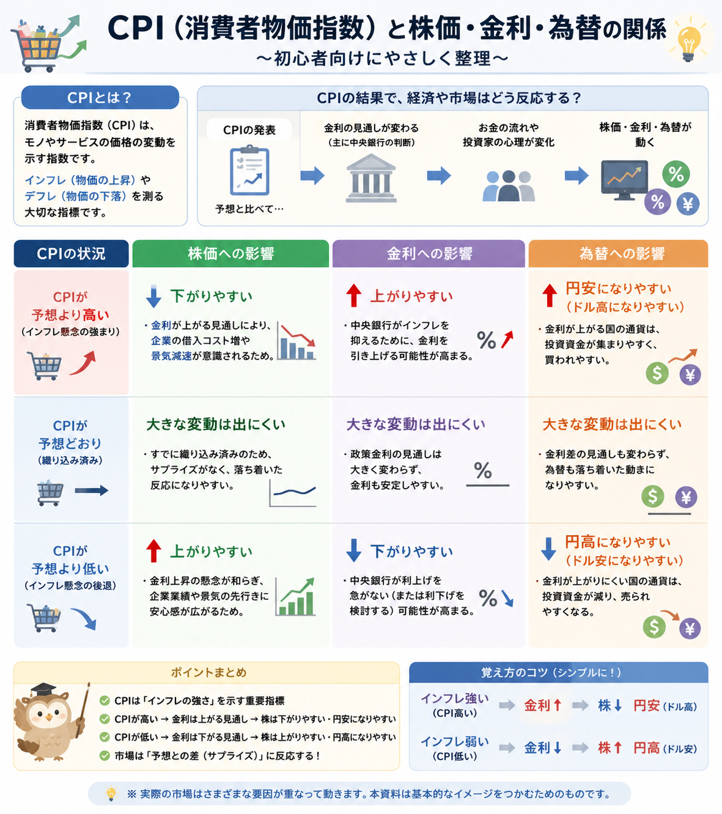

話題・トレンド
CPI（消費者物価指数）とは？なぜ発表されると株価や為替が動くの？初心者向けに解説
ニュースで「米国CPI」「インフレ率」「市場予想を上回った」といった言葉を見ても、 投資初心者にはなぜ株価やドル円まで大きく動くのか分かりにくいかもしれません。 CPIは物価の変化を見る代表的な経済指標で、特に米国CPIはFRBの金融政策や金利見通しと結びつけて注目されています。 この記事では、CPIの意味から株価・金利・為替との関係まで順番に整理します。
Current Topic
2026年8月も米国CPIが重要イベントとして注目

2026年8月も、米国CPIは金融市場で注目される経済イベントの一つです。 米労働省労働統計局（BLS）の公表予定では、2026年7月分の米国CPIは 2026年8月12日午前8時30分（米東部時間）に発表予定です。 CPIは毎月発表されるため、特定の月だけを追うのではなく、基本的な読み方を知っておくと今後のニュースにも応用できます。
この記事では最新値の予想はしません。 CPIが高い・低いという数字だけで相場方向を決めるのではなく、 「何を表す数字なのか」「市場予想と比べてどうだったのか」を理解することを目的としています。
Definition
CPI（消費者物価指数）とは？
CPIはConsumer Price Indexの略で、日本語では「消費者物価指数」と呼ばれます。 消費者が日常生活で購入する商品やサービスの価格が、時間の経過とともにどのように変化しているかを測る代表的な経済指標です。
CPIの役割
物価の変化を指数で確認する
食料品、衣類、家賃、電気代、交通、医療、通信など、家計が購入するさまざまな商品・サービスの価格変化をまとめて確認します。
なぜ重要？
インフレ状況を判断する材料になる
物価がどの程度上昇しているか、上昇ペースが強まっているか弱まっているかを見る材料になるため、政府・中央銀行・企業・投資家などから注目されます。
何の物価を調べているの？
日本の総務省統計局は、CPIを「全国の世帯が購入する家計に係る財及びサービスの価格等を総合した物価の変動を時系列的に測定するもの」と説明しています。 米国でも、都市部の消費者が購入する幅広い商品・サービスの価格変化をCPIとして集計しています。
- 食料
- 住居
- 電気・ガス
- 衣類
- 交通
- 医療
- 通信
- 教育・娯楽
CPIは世界共通で一つだけ存在する数字ではありません。 日本では総務省統計局、米国では米労働省労働統計局（BLS）がそれぞれ自国のCPIを公表しています。
Reading CPI
CPIが上がると何を意味する？
CPIが上昇している場合、一般には消費者が購入する商品やサービスの価格水準が以前より高くなっていることを示します。 ただし「CPIが低下した」というニュースの意味には注意が必要です。
CPIの伸びが強い
物価上昇の勢いが強い可能性
CPIの前年比などが高くなると、インフレ圧力が強いと受け止められる場合があります。 ただし、どの品目が値上がりしているのかも重要です。
CPIの伸びが鈍化
物価上昇ペースが弱まっている可能性
例えば前年比が4％から3％へ低下した場合、物価水準そのものが前年より下がったとは限りません。 「上昇しているが、その上昇ペースが鈍くなった」というケースがあります。
CPI低下＝すべての商品が値下がりした、ではありません。 「指数そのものが下がった」のか、「前年同月比の上昇率が低下した」のかを分けて見ることが大切です。
前月比と前年同月比の違い
| 項目 | 比較する期間 | 初心者向けの見方 |
|---|---|---|
| 前月比 | 前の月との比較 | 直近1か月で物価がどの程度動いたかを見る |
| 前年同月比 | 1年前の同じ月との比較 | 1年間で物価がどの程度変化したかを見る |
※ スマートフォンでは横にスクロールできます。
Headline vs Core
総合CPIとコアCPIの違い
CPIニュースでは「総合CPI」と「コアCPI」が並んで紹介されることがあります。 コアCPIは、価格変動の大きい一部の品目を除くことで、物価の基調を確認しやすくするための指標です。
| 種類 | 概要 | 見るポイント |
|---|---|---|
| 総合CPI | 対象となる幅広い商品・サービスを含める | 家計全体の物価変化を広く確認しやすい |
| コアCPI | 変動の大きい特定品目を除いて算出する | 一時的な価格変動の影響を抑えて物価の基調を見る |
※ スマートフォンでは横にスクロールできます。
日本と米国では「コア」の定義に注意が必要です。
- 日本では、一般に「生鮮食品を除く総合」がコアCPIとして扱われます。
- 日本ではさらに「生鮮食品及びエネルギーを除く総合」も公表されています。
- 米国では「食品とエネルギーを除く総合（All items less food and energy）」がコアCPIとして広く注目されます。
「コアCPI」という言葉だけを見て、日本と米国でまったく同じ品目を除外していると思わないことが重要です。 海外ニュースを見るときは、どの国のCPIで、何を除いた数字なのかも確認しましょう。
U.S. CPI
なぜ米国CPIが世界中から注目されるの？
米国は世界最大級の金融市場を持ち、米国の金利は世界中の株式・債券・為替市場に影響します。 米国CPIはインフレ状況を確認する重要指標として、FRBの金融政策を考える材料の一つになります。
1．CPIでインフレの強さを確認する
CPIの伸びが強ければ、物価上昇圧力が根強いと受け止められる場合があります。 反対に、上昇ペースが落ち着けばインフレ圧力の緩和が意識されることがあります。
2．FRBの金融政策への見方が変わる
FRBは物価安定と最大雇用などを目標に金融政策を運営しています。 CPIはFRBが正式な物価目標として採用しているPCE価格指数とは別の指標ですが、 インフレを早い段階で確認する重要なデータとして市場から注目されます。
3．利上げ・利下げ観測が変化する
インフレが想定より強いと「高い金利が長く続くのではないか」と考える投資家が増える場合があります。 逆にインフレ鈍化が確認されれば、将来の利下げを意識する動きが強まる場合があります。
4．米国金利から世界の市場へ波及する
米国金利の見通しは米国株だけでなく、ドル円などの為替、日本株、世界の債券市場にも影響します。 そのため米国CPIは世界中の投資家から注目されます。
FRBや金利との関係をさらに確認したい場合は、 FOMCとは？、 金利上昇とは？ もあわせて確認すると流れを理解しやすくなります。
Market Reaction
CPI発表で株価や為替が動く基本構造
CPIが直接すべての株価や為替を動かしているわけではありません。 CPIを受けて「インフレ」「FRB」「金利」に対する投資家の予想が変化し、 その結果として株式・債券・為替へ売買が広がります。
CPI
物価上昇の強さや変化を確認する。
金利
FRBの金融政策や将来の政策金利見通しが変化する。
市場
株式・債券・ドル円などの評価や資金の流れが変わる。
Stocks
CPIで株価が動く理由
CPI発表後に株価が動く大きな理由の一つが、将来の金利見通しです。 特に市場予想と大きく違う結果が出ると、投資家が想定していた金融政策シナリオが修正され、株価が大きく動く場合があります。
市場予想より高いCPI
金利が高い状態が続くとの見方につながる場合
インフレが予想以上に強いと判断されると、利下げが遠のく、あるいは金融引き締めが長引くとの見方が広がることがあります。 その場合、株式市場の重しになることがあります。
市場予想より低いCPI
金利低下への期待につながる場合
インフレ鈍化が意識されると、将来的な利下げへの期待が強まり、株式市場に追い風となる場合があります。 ただし景気悪化への警戒が同時に強まることもあります。
なぜ成長株・ハイテク株は金利の影響を受けやすいの？
成長株やハイテク株は、現在の利益だけでなく将来大きく利益が伸びるという期待で高く評価されることがあります。 金利が上昇すると将来の利益を現在価値へ割り引いたときの評価が低下しやすくなるため、 金利上昇局面では株価の重しになる場合があります。
半導体などの成長分野も金利の影響を受ける場合があります。 詳しくは半導体株とは？でも整理しています。
「CPI上昇＝必ず株安」「CPI低下＝必ず株高」ではありません。 景気、企業業績、FRB発言、すでに株価へ織り込まれていた期待など複数の要因が同時に影響します。
株価が一つの材料だけで決まらない理由は、 株価はなぜ上下するのか？ でも解説しています。
Foreign Exchange
CPIでドル円が動く理由
ドル円などの為替市場でも、米国CPIは重要な材料になります。 特に注目されるのが、米国金利の見通しと日本の金利との関係です。
-
米国CPIが発表される
市場予想より強いのか弱いのかが確認されます。
-
FRBの金融政策予想が変わる
利上げ・据え置き・利下げの可能性について市場の見方が変化します。
-
米国金利が動く
米国債の利回りなどが反応し、ドルを保有する魅力への評価が変化する場合があります。
-
日米金利差への見方が変わる
米国と日本の金利差が広がるのか縮小するのかという予想が、ドル円の材料になります。
-
ドル円が動く
投資家がドルや円を売買し、短時間で為替が大きく変動する場合があります。
CPIが高ければ必ず円安になるわけではありません。 すでに市場へ織り込まれていた場合や、日本側の金融政策、景気、他の経済指標、 投資家のリスク回避姿勢などによって反応が変わることがあります。
為替の基本については円安とは？でも解説しています。
Market Expectations
「市場予想」が重要なのはなぜ？
CPIニュースを見るとき、初心者が特に覚えておきたいのが 数字そのものより「市場予想との差」が相場を動かす場合があるという点です。
市場予想：2.5％
→ 実際の数字は市場予想より高い
市場予想：3.5％
→ 実際の数字は市場予想より低い
どちらも実際のCPIは3.0％ですが、市場が事前に想定していた数字によって受け止め方は逆になります。 株式市場や為替市場では、多くの投資家が発表前から一定の予想をもとに売買しているためです。
予想通り
すでに市場へ織り込まれている場合、数字だけでは大きく動かないこともあります。
予想を上回る
インフレが市場想定より強いとして、金利見通しが修正される場合があります。
予想を下回る
インフレが市場想定より弱いとして、将来の金融政策予想が変化する場合があります。
CPIが「高いか低いか」だけでなく、 市場予想・前回値・今回の数字をセットで見るとニュースを理解しやすくなります。
News Checklist
初心者がCPIニュースを見るポイント
CPI発表日は数字や速報が大量に流れます。 見出しの「CPI○％」だけで慌てず、次の項目を順番に確認すると整理しやすくなります。
前年同月比・前月比
1年前との比較なのか、前月との比較なのかを確認します。
総合・コアCPI
総合指数なのか、変動の大きい一部品目を除いた数字なのかを確認します。
市場予想との差
発表された数字だけでなく、事前予想を上回ったか下回ったかを確認します。
前回値
前回からインフレの勢いが強まったのか、弱まったのかを比較します。
FRBへの影響
金利据え置き・利下げ・利上げへの市場予想がどう変わったかを確認します。
市場の実際の反応
株価、米国金利、ドル円が実際にどう反応したのかを確認します。
- 「CPI○％」という見出しだけで売買を決めない
- 市場予想と実際の数字をセットで見る
- 総合CPIとコアCPIを混同しない
- 日本と米国でコアCPIの定義が異なる点に注意する
- FRBの反応をCPIだけで決めつけない
- 発表直後は株価・為替が大きく上下する場合がある
短期的な経済指標に振り回されにくい投資の考え方を確認したい場合は、 長期投資とは？も参考になります。
Japan Market
米国CPIが日本株にも影響するのはなぜ？
米国CPIは米国の経済指標ですが、日本株にも影響することがあります。 米国株、米国金利、ドル円、世界の投資家心理がつながっているためです。
米国株市場が動く
CPIを受けて米国株が大きく動くと、その流れを翌日の日本市場が引き継ぐことがあります。
ドル円が動く
為替の変化は輸出企業や海外売上比率の高い企業の業績期待へ影響する場合があります。
金利に敏感な業種が動く
半導体・ハイテクなどの成長株だけでなく、銀行、不動産など、金利変化によって評価が変わりやすい業種もあります。
世界的なリスクオン・リスクオフ
CPIが市場予想と大きく異なると、世界の投資家がリスク資産への投資姿勢を変えることがあり、日本株にも資金の流れが波及します。
日本市場を見る際は、 日経平均に関する記事や TOPIXとは？、 セクター投資とは？ もあわせて確認すると、市場全体と業種別の動きを分けて考えやすくなります。
Related Articles
CPIと一緒に確認したい関連記事
CPIニュースを理解するには、金融政策・金利・為替・株価指数などの基本を一緒に確認すると理解しやすくなります。
FAQ
CPIに関するよくある質問
-
CPIとは何ですか？
CPIはConsumer Price Indexの略で、日本語では消費者物価指数と呼ばれます。 消費者が購入する商品やサービスの価格が、時間の経過とともにどのように変化しているかを見る代表的な経済指標です。 -
CPIが上がるとどうなりますか？
一般には物価の上昇ペースが強いことを示します。 ただしCPIが上がったからといって、株価・金利・為替が必ず一方向へ動くわけではありません。 市場予想との差やFRBの金融政策見通しなども影響します。 -
CPIとインフレの違いは？
インフレは、一般に物価全体が継続的に上昇する状態を指します。 CPIは、その物価の変化を測定するために使われる代表的な指標の一つです。 そのためCPIとインフレは密接に関係していますが、完全に同じ意味ではありません。 -
なぜ米国CPIで日本株も動くのですか？
米国CPIがFRBの金融政策や米国金利の見通しへ影響し、 その結果として米国株、ドル円、世界の投資家心理が変化する場合があるためです。 こうした動きが日本株にも波及することがあります。 -
CPIが高いと円安になりますか？
必ず円安になるわけではありません。 米国CPIが市場予想を上回り、米国金利が高い状態が続くとの見方が強まればドル高・円安要因になる場合があります。 一方、日本の金融政策や景気、他の経済指標、市場への織り込み状況によって反対方向へ動くこともあります。 -
コアCPIとは何ですか？
価格変動の大きい一部の品目を除き、物価の基調を確認しやすくしたCPIです。 日本では一般に生鮮食品を除く総合指数がコアCPIと呼ばれる一方、 米国では食品とエネルギーを除く指数がコアCPIとして注目されます。 国によって定義が異なる点に注意が必要です。 -
CPIはいつ発表されますか？
CPIは各国の統計機関から定期的に発表されます。 米国CPIは米労働省労働統計局（BLS）が原則として毎月公表していますが、具体的な発表日は月によって異なります。 2026年7月分は2026年8月12日午前8時30分（米東部時間）に発表予定です。 最新の日程はBLSなど公的機関の公表予定を確認してください。
Summary
まとめ｜CPIは数字と市場予想をセットで見ることが重要
- CPIは、消費者が購入する商品・サービスの価格変化を見る代表的な経済指標です。
- CPIはインフレの状況を判断する材料の一つですが、CPIとインフレは完全に同じ意味ではありません。
- 米国CPIはFRBの金融政策や金利見通しに影響するため、世界中の金融市場から注目されます。
- 株価やドル円はCPIそのものだけでなく、市場予想との差によって大きく動く場合があります。
- 「CPI上昇＝必ず株安・円安」のように相場方向を一つに決めつけるのは注意が必要です。
- 初心者は前年同月比・前月比、総合・コア、市場予想、前回値をセットで確認することが大切です。
Next Step
次はFOMC・金利・為替の関係も確認する
CPIの数字だけを見るよりも、FRBが金融政策をどう考えるのか、 金利変化が株式・為替へどう波及するのかまで理解すると、経済ニュースを落ち着いて読みやすくなります。
ご利用にあたっての注意事項
本記事は一般的な情報提供と金融教育を目的としており、特定の企業・銘柄・通貨・金融商品・証券会社・FX会社の推奨や、 投資の勧誘を目的としたものではありません。 株式、投資信託、外国為替などの金融商品は、相場変動、為替変動、金利変動、信用状況、制度変更などにより損失が生じる場合があります。 CPIや経済指標の発表結果だけで将来の相場方向を判断することはできません。 取引を行う際は最新の公式情報や契約締結前交付書面などをご確認のうえ、 ご自身の判断と責任で行ってください。